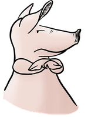
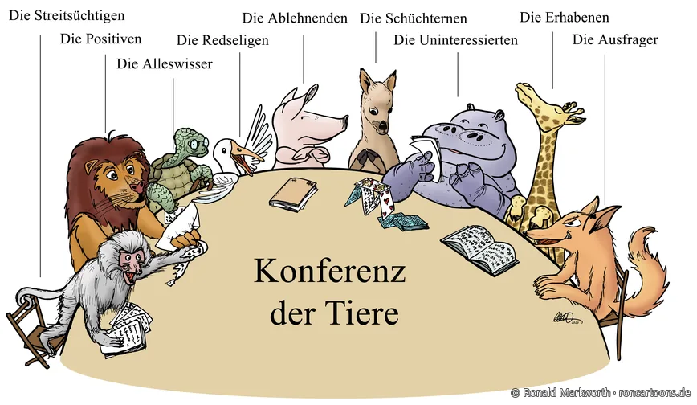
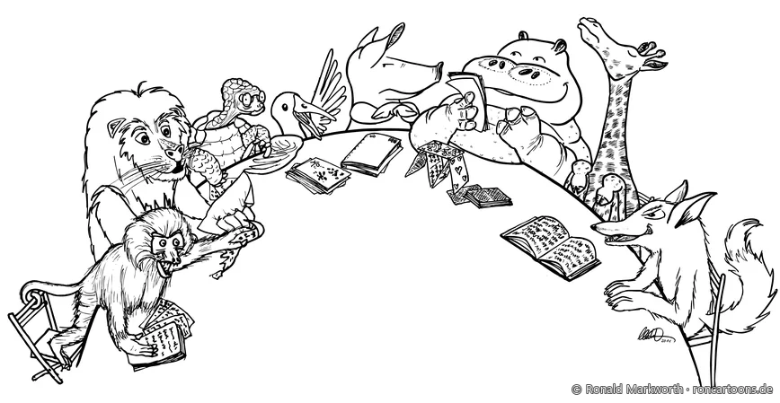

cartoons.de
cartoons.de
Konferenz der Tiere
Wer schon einmal eine Besprechung moderiert hat, kennt sie: schwierige Teilnehmer. Streitsüchtige, Alleswisser, Redselige, Schüchterne oder Uninteressierte sitzen in fast jeder Runde. In dieser Illustration sitzen sie als Tiere um einen Tisch, und zu jedem gibt es einen kurzen Tipp, wie man als Moderator oder Moderatorin mit ihm umgehen kann.

Die Teilnehmer und der Umgang mit ihnen
- Die Streitsüchtigen
- Sachlich und ruhig bleiben und sich nicht in den Streit hineinziehen lassen. Taktik des toten Winkels: den Streit nicht beachten, sondern auf die Sache zurücklenken.
- Die Positiven
- Sie sind die Stütze der Besprechung. Ergebnisse von ihnen zusammenfassen lassen und sie bewusst in die Diskussion einschalten.
- Die Alleswisser
- Die Gruppe zu ihren Behauptungen Stellung nehmen lassen.
- Die Redseligen
- Zwischenrufer und Vielredner: taktisch unterbrechen und die Redezeit begrenzen.
- Die Ablehnenden
- Ehrgeiz wecken, Kenntnis und Erfahrung anerkennen und nutzbar machen.
- Die Schüchternen
- Mit einfachen, leicht zu beantwortenden Fragen einbeziehen, ermutigen und Beiträge anerkennen. Hilfreich ist auch, Ideen zuerst in kleinen Gruppen oder schriftlich zu sammeln.
- Die Uninteressierten
- Nach der eigenen Arbeit fragen und Beispiele aus ihrem Gebiet bringen lassen.
- Die Erhabenen
- Das „hohe Tier“: keine Kritik üben, sondern mit der „Ja, und …“-Technik anknüpfen.
- Die Ausfrager
- Der schlaue Fuchs will die Moderation reinlegen. Seine Fragen zur Stellungnahme an die Gruppe weitergeben.
Die Skizze
Vor der Kolorierung stand die Skizze.

Die Konferenz der Tiere für Ihre Veranstaltung
Der Cartoon eignet sich für Moderations- und Kommunikationstrainings, Seminarunterlagen, Präsentationen, Lehrbücher und Newsletter. Nutzungsrechte, Druckdateien oder ein Poster erhalten Sie auf Anfrage über die Kontaktseite.
Mit Erich Kästners Kinderbuch „Die Konferenz der Tiere“ und dem gleichnamigen Film hat diese Zeichnung nichts zu tun.
← Zurück zu den Illustrationen